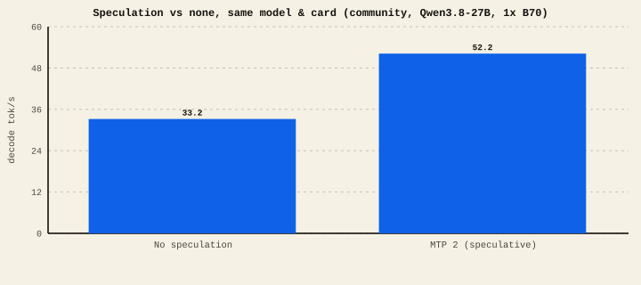

The short version
- No speculation (target-only): one token per pass. The slowest, but the gold standard for determinism and quality checks.
- MTP / nextn (the checkpoint’s built-in next-tokens head): a draft head built into the model. The easiest big win when the model ships it. See the MTP ladder.
- DFlash: a fast pretrained draft mechanism run at depth — behind our highest multi-card records.
- Draft-model: a separate small model does the guessing. Flexible; needs a matching drafter.
- All speculative methods should be lossless if implemented correctly — but a broken one silently changes output, so verify.
The core idea, one more time
Plain decoding writes one token per pass through the model, and each pass wastes most of its time waiting on memory. Every speculative method fills that idle time the same way: something cheap guesses the next few tokens, the full model verifies them in a single pass, and correct guesses become near-free tokens. The methods differ only in who does the guessing.
Speculation vs none — same model, same card

The methods
| Method | Who guesses | Best for | Watch out for |
|---|---|---|---|
| None (target-only) | nobody — one token/pass | Determinism, quality baselines, quantization checks; any runtime without speculation | Slowest option; it's the reference, not the race car |
| MTP / nextn | a draft head trained inside the model | Models that ship MTP heads (Qwen3-Next family); the easiest single-knob win | Only where the runtime + weights support it; concurrency crash on some hybrids |
| DFlash | a fast pretrained draft, run several tokens deep | Squeezing the ceiling on tuned multi-card lanes | Setup-heavy; depth must be tuned; part of our expert records, not a one-click toggle |
| Draft-model | a separate small model | Base models with no built-in draft head but a good small sibling | Needs a well-matched, aligned drafter; two models to fit in VRAM |
| ReplaySSM | a replay/state-space draft variant | Research configurations; historical Qwen3.6 lane | Specialized; results are config-specific |
What each reached in this lab
These are not comparable to each other — different models, different card counts. They show the ceiling each method reached on its own lane, not a head-to-head. Lab
| Record | Method | Cards | tok/s |
|---|---|---|---|
| Poolside Laguna S 2.1 INT4 | DFlash (depth 11) | 4× B70 | 125.46 |
| Muse-Glimmer-30B Q8/WOQ (weight-only quantization) | pretrained DFlash | 4× B70 | 100.37 |
| DeepSeek-V4-Flash | DSpark7 (flash draft) | 4× B70 | 80.8 (research) |
| Qwen3.8-27B AutoRound INT4 | MTP 5 | 2× B70 | 101.2 (research) |
| Ornith 1.5 35B-A3B Q4_K_M | none (target-only) | 1× B70 | 131.46 |
| Gemma-4-26B UD-Q8_K_XL | MTP 3 | 1× B70 | 123.73 |
The pattern that does transfer: speculation wins within a lane — same model, same cards, draft on vs off — and the biggest per-lane jumps here came from a tuned DFlash draft. It does not decide the overall board: the current #1 is a target-only single-card run whose speed came from kernel work, not drafting. Speculation's ceiling also comes with the most setup and the most careful verification.
A correct speculative method returns exactly what plain decoding would. That's the whole appeal: speed with no quality tax. The risk is subtle — a mismatched margin, an off-by-one draft, or a runtime bug can make speculation quietly change the output. Our own highest Qwen3.8 speculative number sits in the research lane precisely because its run-to-run token parity isn't yet nailed down. Treat "lossless" as a claim you verify, not one you assume.
More speculation depth is not always more speed — acceptance has to keep up with the added draft cost (the MTP ladder shows the plateau). And speculation interacts badly with some features: concurrency crashes on certain hybrid models, and it can conflict with structured-output/grammar backends. Enable one accelerator at a time and re-check output each time.
Ranked by effort-to-reward for most people: 1) if your model+runtime has MTP, turn it on (start at depth 2). 2) If not, keep no speculation and win speed elsewhere (smaller quant, f16 KV, more bandwidth). 3) Reach for DFlash or a draft-model only when you're chasing the ceiling and willing to tune and verify. Whatever you pick, keep a target-only run around as your quality reference.